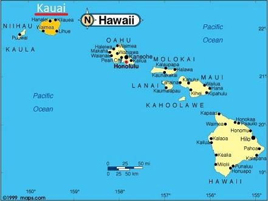
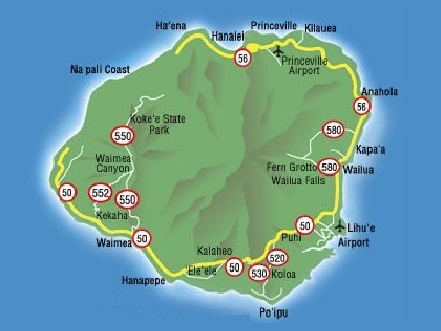
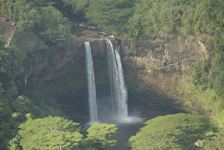
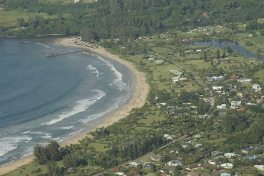

Destination: Kauai


Kauai
is a tropical island paradise in the Hawaiian Island
chain. The island is lush with vegetation and has been well
maintained, having contemporary civic services like water,
waste, transportation, ecological reservation areas etc.
During my stay in Kauai there was precious little threat of
calamity occurring, although it is in an active volcanic
region the island of Kauai has not seen an eruption in
perhaps
5.5 million years.
My travel agent suggested renting a car on this island
given the transit system is less well developed than most
metropolitan areas. Travelling around the island is really
an exceptional experience, and I would definitely second
this suggestion to anyone making it a holiday destination.
The island exuded an aura of peaceful paradise throughout
my stay there, and if asked I just might say this is probably
the closest to paradise I have ever come in this life. The
sun is warm in December not hot, even though the temperature
may be listed close to 30 degrees you may not even realize it.
Throughout the day clouds frequent the north and east sides
of the island where most people live. These clouds bring a
delightful rain
which if you are lucky to experience, is most
likely warm to touch.
Helicopter Ride


I decided to take a friend with me on my vacations, because
normal travel services reduce the costs to have more than
one person on the trip. The person I took on this trip
demanded that we take a helicopter ride around the island.
Initially I argued against it, because the cost of a
helicopter ride is so very expensive, however I soon
realized that taking a helicopter trip on this island would
be simply unforgettable. Luckily the weather on this day
was exceptional and there were so many unique sites to see,
it was well worth the price of admission. To top this off the
Blue Hawaiian
helicopter group provided a full movie of the entire trip
for a very low price.
Our First stop was a waterfall where Jurassic Park was
filmed, we then flew over Waimea Canyon which looks pretty
much the same as the Grand Canyon. After this we flew to the
west side of the island and around the jagged Napali mountain
coast. We discovered this is one of the only areas of the
island specifically unaccessible by road, however the sharp
inclines are amazing, green, and spotted with many waterfalls.
On the way back we flew over Hanalei Bay, to the highest
mountain and rainiest area on the island. Then down to the
plains areas of the east side of the island, ending with a
great fly over of the Fantasy Island waterfall called,
"Wailua Falls"